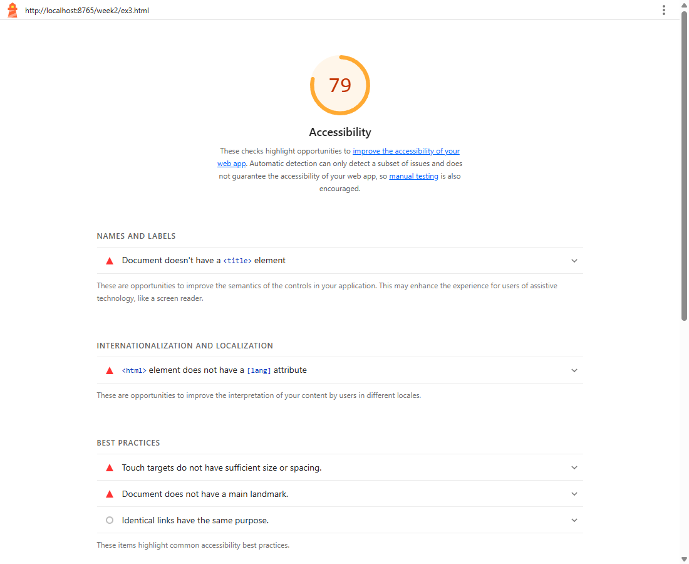
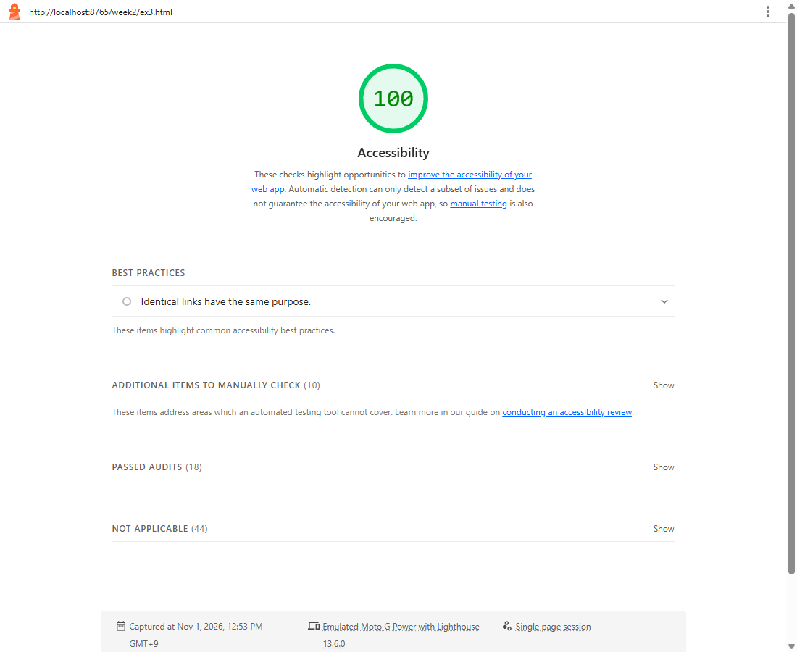
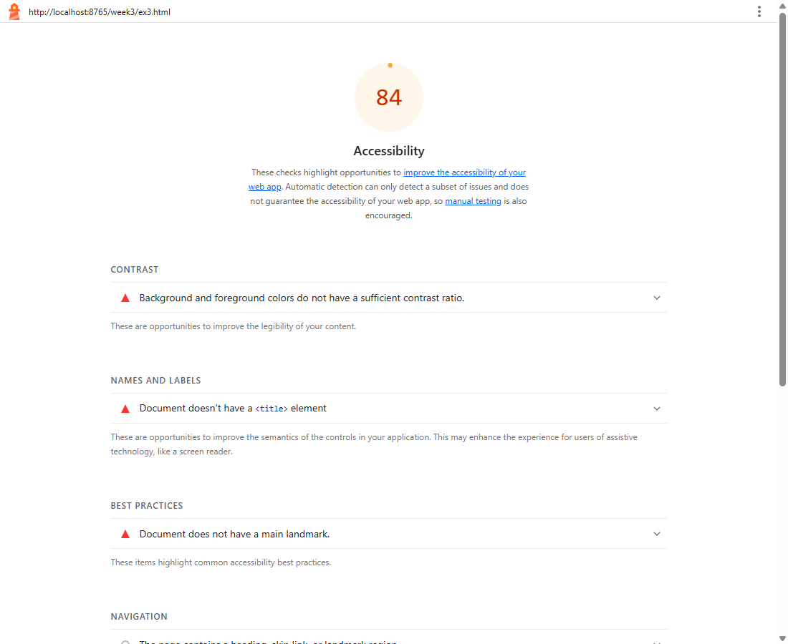
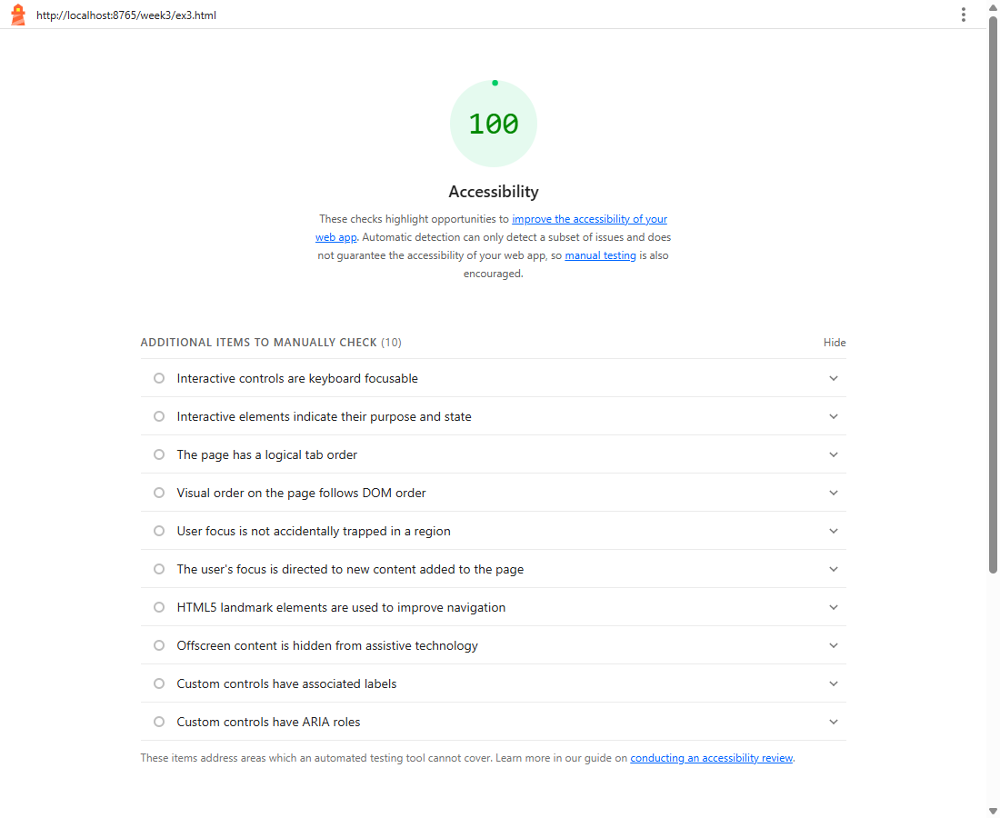
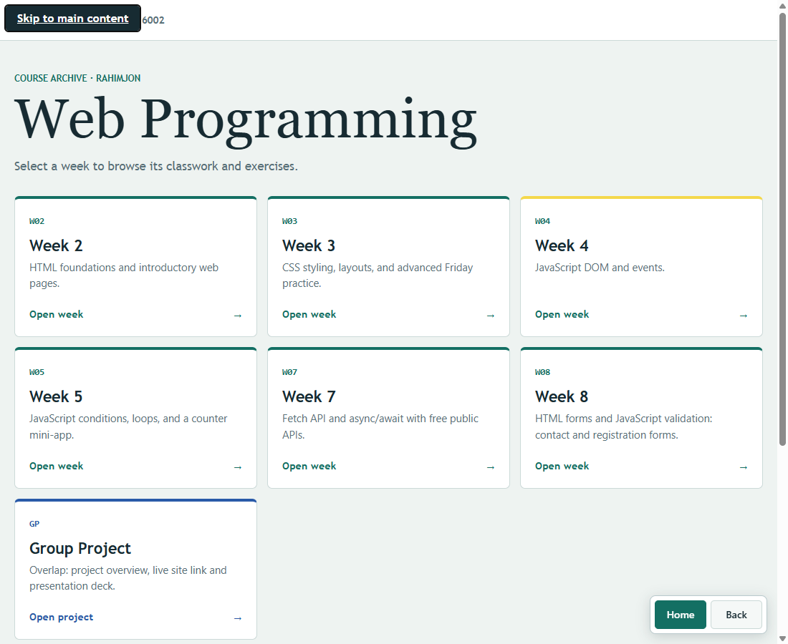

Web Accessibility Audit
Lighthouse accessibility audit (Chrome, mobile emulation) of every page on this site, the fixes I made, and a skip link for the course project.
Scores
The newest pages (Weeks 4, 5, 7, 8 and the group project) already scored 100. The older Week 2 and Week 3 pages did not, so those were the audit targets: 22 of 48 pages scored below 100 (average 92.3). After the fixes, all 48 pages score 100.
79Before
week2/ex3.html
week2/ex3.html
100After
week2/ex3.html
week2/ex3.html
84Before
week3/ex3.html
week3/ex3.html
100After
week3/ex3.html
week3/ex3.html
Lighthouse screenshots




Fixes
- Added a
<main>landmark (landmark-one-main) to 22 pages, so screen reader users can jump straight to the content. - Added
lang="en"and a<title>(html-has-lang,document-title). Four Week 2 pages were bare fragments with no<html>or<head>, and seven Week 3 pages had no title. They now have a full document with a descriptive title. - Fixed colour contrast (
color-contrast). White text on the Week 3 colour swatches was 2.1:1 to 4.2:1, so the labels are now black (4.9:1 or better on all five). The footer onweek3/ex8.htmlwas 2.8:1 (#587078 on navy) and is now #cbd5e1. - Enlarged touch targets (
target-size). The menu links onweek2/ex3.htmlwere 17px tall and are now at least 24px. - Added a skip link (WCAG 2.4.1, Level A). It sits at the top of the home page and the group project page. For every other page,
site-nav.jsadds one automatically. It stays off-screen until the first Tab, then jumps to#main-content.

All pages that changed
Show 22 pages (before and after)
| Page | Before | After |
|---|---|---|
| week2/ex3.html | 79 | 100 |
| week2/ex2.html | 84 | 100 |
| week3/ex3.html | 84 | 100 |
| week2/ex4.html | 85 | 100 |
| week2/ex7.html | 86 | 100 |
| week3/ex1.html | 91 | 100 |
| week3/ex2.html | 91 | 100 |
| week3/ex4.html | 91 | 100 |
| week3/ex5.html | 91 | 100 |
| week3/ex6.html | 91 | 100 |
| week3/ex7.html | 91 | 100 |
| week3/ex8.html | 92 | 100 |
| week3/week3-Friday/exercise1-badge.html | 97 | 100 |
| week3/week3-Friday/exercise2-hover-card.html | 97 | 100 |
| week3/week3-Friday/exercise3-spinner.html | 97 | 100 |
| week3/week3-Friday/exercise4-variables-theme.html | 97 | 100 |
| week3/week3-Friday/exercise5-fixed-nav.html | 97 | 100 |
| week2/ex1.html | 98 | 100 |
| week2/ex5.html | 98 | 100 |
| week2/ex6.html | 98 | 100 |
| week2/ex8.html | 98 | 100 |
| week3/week3-Friday/exercise6-responsive-grid.html | 98 | 100 |